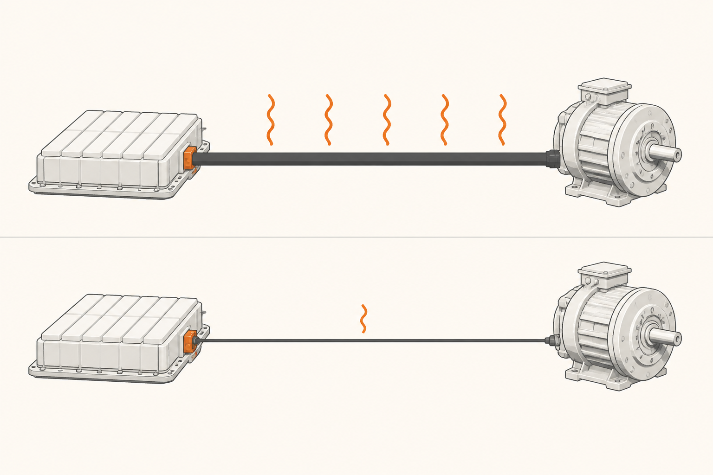

400V vs 800V: qué cambia al subir el voltaje
Casi todos los coches eléctricos modernos funcionan a unos 400 V de voltaje del pack. Algunos modelos recientes han doblado esa cifra a 800 V. Cuando lo lees en una ficha, suena a una mejora más, una cifra más grande es mejor. Pero el cambio es más profundo: 800 V no es "el doble de 400 V", es una arquitectura distinta con su propia lógica, sus propios costes y sus propios beneficios. Esta píldora te explica por qué ese paso ocurre y qué se gana realmente.
La fórmula que lo cambia todo
Toda la conversación sobre voltaje en un coche eléctrico se apoya en una fórmula simple, la que ya viste en la píldora 0:
Potencia (W) = Voltaje (V) × Corriente (A)
Si quieres más potencia (cargar más rápido, acelerar más fuerte), tienes dos palancas: subir el voltaje, subir la corriente. Hagamos cuentas con un caso real: un cargador rápido entregando 250 kW.
El sistema de 800 V hace lo mismo (mover 250 kW) con la mitad de corriente. Esa diferencia, que sobre el papel parece menor, tiene consecuencias enormes. Para entender por qué, hay que ver qué hace la corriente cuando viaja por un cable.
El problema del calor en el cable
Cuando una corriente eléctrica pasa por un cable, parte de su energía se pierde como calor. Esa pérdida no depende del voltaje: depende del cuadrado de la corriente. Doblar la corriente cuadruplica la pérdida en el cable. Mantener la corriente baja es, por tanto, una palanca brutal de eficiencia.
Hay dos formas de evitar que el cable se queme con corriente alta: hacer el cable más grueso (más cobre = menos resistencia = menos calor) o reducir la corriente. La primera vía tiene un techo: cables de cobre muy gruesos pesan mucho, son rígidos, ocupan espacio y son carísimos. La segunda vía es subir el voltaje, que te permite mover la misma potencia con menos corriente, y por tanto con cables más finos, ligeros y baratos.

Las cuatro consecuencias prácticas
Pasar de 400 V a 800 V cambia cuatro cosas a la vez:
1 · Carga más rápida. El techo de un cargador DC viene marcado por la corriente que el cable y el coche pueden aguantar. Con 800 V, esa corriente es la mitad para la misma potencia, así que se puede subir el techo. Cargadores capaces de 350 kW se aprovechan de verdad solo con coches de 800 V; un coche de 400 V conectado al mismo cargador rara vez pasa de 250 kW.
2 · Cables más finos y ligeros. No solo en el cable de carga. Dentro del coche, el cableado de alta tensión que conecta el pack con el inversor y el motor también puede ser más fino. Eso ahorra varios kilos de cobre — y en un coche, cada kilo cuenta. El cable de carga rápida también es más manejable.
3 · Menos pérdidas. Tanto en el cable de carga como en el cableado interno. La eficiencia mejora un par de puntos, lo que se traduce en autonomía adicional con la misma batería.
4 · Menos calor que disipar. Si la corriente es la mitad, el calor generado en cables y conexiones es mucho menor. El sistema térmico del coche sufre menos, sobre todo durante carga rápida prolongada — el cuello de botella suele ser cuánto calor se puede sacar del pack y del cableado en cada minuto.
Lo que cuesta
Si los beneficios fueran gratis, todos los coches serían ya de 800 V. Pero no es así. El cambio tiene tres costes técnicos importantes:
Semiconductores SiC. Los semiconductores de silicio tradicionales no aguantan bien tensiones tan altas. 800 V exige semiconductores de carburo de silicio (SiC) en el inversor, en el OBC y en el DC-DC. Son más caros que los de silicio puro, aunque también más eficientes. Por eso 800 V suele venir acompañado de SiC: van de la mano.
Aislamientos especiales. El doble de voltaje exige más aislamiento en cables, conectores, contactores y cualquier punto donde haya riesgo de arco eléctrico. Cada componente eléctrico de alta tensión tiene que estar especificado para 800 V, lo que encarece la lista de materiales.
Compatibilidad con cargadores. Un coche de 800 V conectado a un cargador DC de 400 V tiene que adaptar el voltaje internamente, normalmente vía el inversor o un convertidor dedicado. Eso añade complejidad. La buena noticia es que la mayoría de coches modernos de 800 V incluyen esa adaptación y cargan en cualquier cargador, solo que más lento que en uno nativo de 800 V.
Por todo esto, 800 V tiene sentido económico cuando el coche prioriza carga ultrarrápida y eficiencia (deportivos, premium, viajeros largos). Para un urbano modesto, donde la mayor parte de la carga es lenta en casa, 400 V sigue siendo la opción razonable. No es "mejor o peor": es "para qué".
Por qué no se sube todavía más
Si subir de 400 a 800 mejora tanto, ¿por qué no subir a 1500 V o 3000 V? Tres razones.
Aislamiento exponencial. Cuanto mayor es el voltaje, más exigente es el aislamiento y más distancia hay que dejar entre conductores para evitar arcos. A partir de cierto punto, el coste y el volumen del aislamiento crecen más rápido que los beneficios.
Seguridad para personas. Cualquier voltaje por encima de los 60 V DC se considera peligroso. Por encima de los 1 000 V, las normativas de seguridad (para reparación, intervención de bomberos en accidentes, instalación) se complican mucho. La industria ha acordado de facto que ~800 V es un buen techo práctico para vehículos de pasajeros.
Vehículos pesados son otra cosa. En camiones eléctricos sí se está experimentando con 1 200 o 1 500 V, porque manejan potencias mucho mayores y la justificación cambia. Pero los turismos no necesitan ir más allá de 800 V con la tecnología actual.
Cómo identificar la arquitectura
Tres pistas prácticas para reconocer si un coche es de 400 V o 800 V sin abrir el manual:
Velocidad máxima de carga DC anunciada. Por encima de 250 kW casi siempre es 800 V. Por debajo, casi siempre 400 V.
Tiempo de carga 10-80% en cargador potente. Si está por debajo de 20 minutos, probablemente 800 V. Si ronda los 30 minutos, 400 V.
Mención explícita en la ficha. Las marcas de los coches 800 V suelen presumir de la arquitectura, porque es un argumento de venta. Si no lo mencionan, suele ser 400 V.
No hay nada malo en ser de 400 V. La gran mayoría de coches eléctricos en circulación son de 400 V, cargan perfectamente para uso normal y tienen mucho recorrido por delante. Pero entender la diferencia te permite leer una ficha sin caer en las dos trampas habituales: pensar que 800 V es siempre mejor (no para todos los usos), o asumir que dos coches con cifras parecidas de carga pico son iguales en la práctica (la sostenida importa tanto como la pico).
FácilSi la potencia es la misma, ¿por qué pasar de 400 V a 800 V baja la corriente a la mitad?
Porque potencia = voltaje × corriente. Si fijas la potencia y duplicas el voltaje, la corriente tiene que reducirse a la mitad para mantener el producto igual. Es aritmética directa.
Fácil¿Por qué 800 V exige semiconductores SiC?
Porque los semiconductores de silicio tradicionales no soportan bien voltajes tan altos sin perder mucha energía como calor o sin romperse. SiC (carburo de silicio) está diseñado precisamente para tensiones altas y eficiencia: aguanta 800 V cómodamente y conmuta con menos pérdidas. Por eso 800 V y SiC suelen ir juntos en los coches modernos.
Medio¿Por qué un coche de 400 V conectado a un cargador de 350 kW rara vez aprovecha esos 350 kW?
Porque para entregar 350 kW a 400 V hacen falta 875 A de corriente (350 000 ÷ 400). Esa corriente es altísima: requiere cables muy gruesos, mucho calor a disipar y conectores capaces. Tanto el coche como el cable de carga suelen tener un techo más bajo (típicamente 500-625 A), lo que limita la potencia real a 200-250 kW. Un coche de 800 V mueve los mismos 350 kW con la mitad de corriente, dentro de los límites prácticos del cable y del coche.
Difícil¿Por qué la industria ha elegido 800 V como techo práctico para turismos en lugar de subir más?
Por dos motivos compatibles. Técnico: el aislamiento, los conectores y los semiconductores se vuelven exponencialmente caros y voluminosos por encima de cierto voltaje. Las ventajas decrecen y los costes se disparan. De seguridad: por encima de 1 000 V las normativas para reparación, mantenimiento e intervención (bomberos en accidentes, talleres) se complican mucho. 800 V queda en un punto óptimo: suficiente para mejorar carga y eficiencia notablemente, sin entrar en una zona de complicaciones desproporcionadas. Camiones y autobuses, que mueven más potencia, sí están explorando 1 200-1 500 V — pero los turismos no necesitan llegar tan arriba.